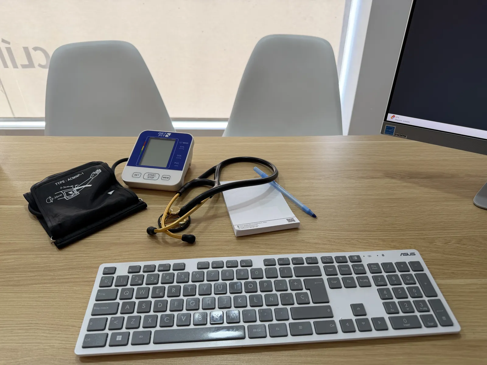

Valoración cardiovascular integral · Prevención · Tratamiento

¿En qué consiste?
La consulta cardiológica es una valoración médica completa del sistema cardiovascular. El objetivo es conocer el estado de salud, detectar enfermedades y prevenirlas antes de que se desarrollen. Detectar y controlar los factores de riesgo antes de que causen daño, diseñar estrategias de prevención personalizadas y, cuando hay cardiopatía, ajustar el tratamiento de forma individualizada.
Cada consulta incluye historia clínica detallada, exploración física cardiovascular, análisis de pruebas previas y realización de ECG, ecocardiograma y otras pruebas cuando son necesarias. A partir de ahí se establece un diagnóstico, se estratifica el riesgo y se diseña un plan terapéutico que integra medicación, estilo de vida, nutrición y ejercicio.
¿Cuándo está indicada?
Síntomas cardiovasculares
Palpitaciones, dolor en el pecho, mareo, síncope, disnea o cansancio fuera de lo normal.
Factores de riesgo
Hipertensión, colesterol elevado, diabetes, obesidad, tabaquismo o antecedentes familiares de cardiopatía.
Diagnóstico reciente
Cardiopatía isquémica, arritmias, insuficiencia cardíaca o valvulopatías recién diagnosticadas.
Seguimiento de cardiopatía
Control evolutivo, ajuste de tratamiento o valoración de síntomas nuevos en cardiopatía conocida.
Segunda opinión
Revisión de informes, aclaración de diagnósticos o valoración de alternativas terapéuticas.
Prevención en personas sanas
Conocer el riesgo cardiovascular real con antecedentes familiares o interés en prevención activa.
¿Cómo es la consulta?
La consulta presencial dura aproximadamente 45–60 minutos, con el tiempo necesario para ti, sin prisa. Se estructura en cuatro fases:
1
Historia clínica y motivo de consulta
Tiempo para entender qué te preocupa, revisar antecedentes personales y familiares, factores de riesgo, síntomas actuales y tratamiento previo. Es la parte más importante de la valoración — sin ella, las pruebas no tienen contexto.
2
Exploración física cardiovascular
Toma de tensión arterial, auscultación cardiopulmonar, valoración de pulsos periféricos y signos de insuficiencia cardíaca. Además de cualquier otro signo relevante que oriente el diagnóstico.
3
Pruebas complementarias
Revisamos y comentamos los resultados de pruebas previas (analítica, Holter, TAC, prueba de esfuerzo, cateterismo…). A continuación se realiza un electrocardiograma y un ecocardiograma para una valoración integral del corazón. Si faltan pruebas, se solicitan y se realizan.
4
Diagnóstico, plan terapéutico y seguimiento
Explicación clara del diagnóstico, estratificación del riesgo cardiovascular y diseño de un plan individualizado: tratamiento farmacológico si procede, modificación de estilo de vida, nutrición y calendario de seguimiento.
Por qué en esta consulta
Enfoque integral
La consulta no se limita a ajustar fármacos. Integra nutrición, ejercicio y hábitos como herramientas terapéuticas de primera línea — porque el riesgo cardiovascular nace en el estilo de vida, no solo en la farmacia.
Formación dual
Especialista en Cardiología y graduado en Nutrición Humana y Dietética. Una combinación que permite abordar el riesgo cardiovascular desde su origen, no solo desde sus consecuencias.
La consulta se desarrolla en Clínica Elche Salud, con acceso directo a pruebas diagnósticas — ECG, ecocardiograma y Holter — sin demoras ni derivaciones.
Reserva tu consulta
Consulta presencial en Elche. Pide cita directamente a través de Doctoralia.